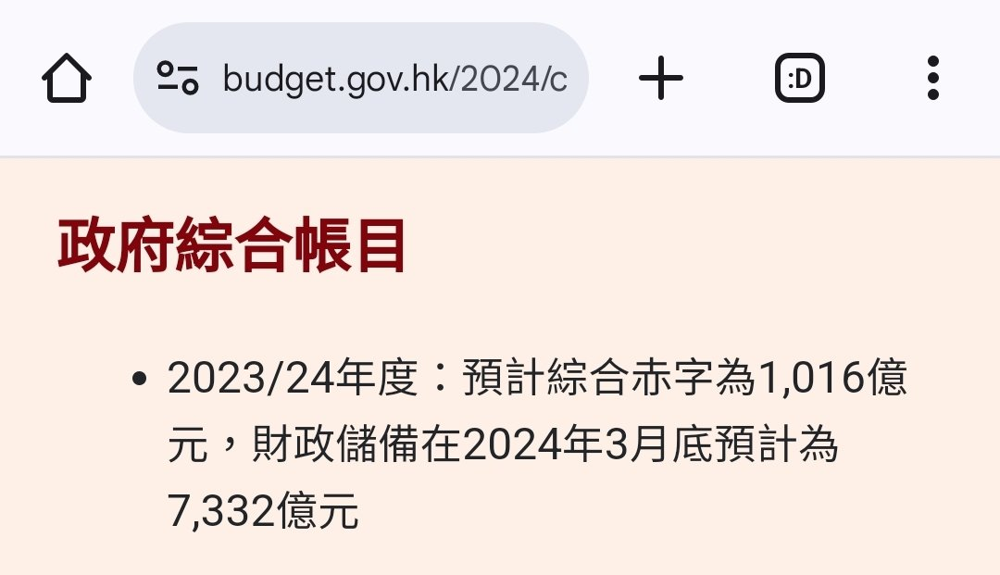

RedFox（2代目）🇲🇴🇭🇰
@FoxRed695449
@TidVR7NzHA26324 有沒有一種可能，20年的時候你們內地爆發了疫情導致全世界基本上都有限聚令？
疫情爆發以後尤其是口罩令和限聚令後抗議活動就大幅下降
至於國安法？啊，對，實在是太好了，港府從著名的高儲備高盈餘变為連年財政赤字🤣🤣🤣，你這是太悲觀，而我看到的是由治至興的好處

羲皇
@TidVR7NzHA26324
我唯独不明白的一件事，就是为什么在国安法颁布之后，香港的暴乱在一天之内就销声匿迹了，按理说，国安法是比修例更加恶劣的结果，为什么香港年轻人一下子就消停了，任由被权贵搓圆摈扁了呢？
噢，我知道了，原来香港年轻人需要的，一直都是严刑峻法。 https://t.co/Yc4vaHnvCv